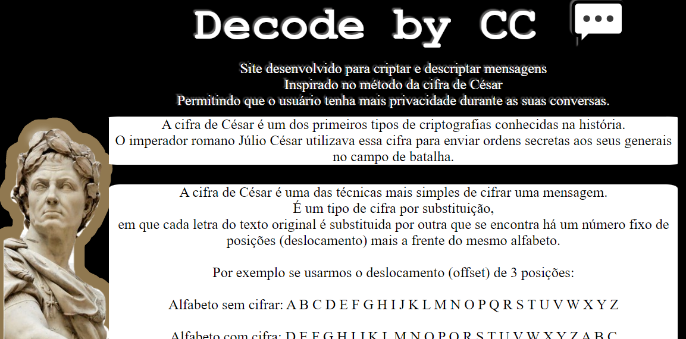
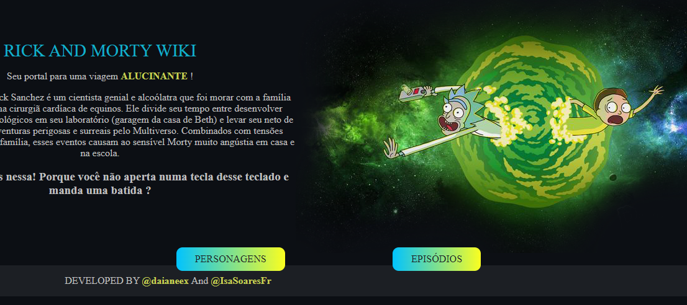
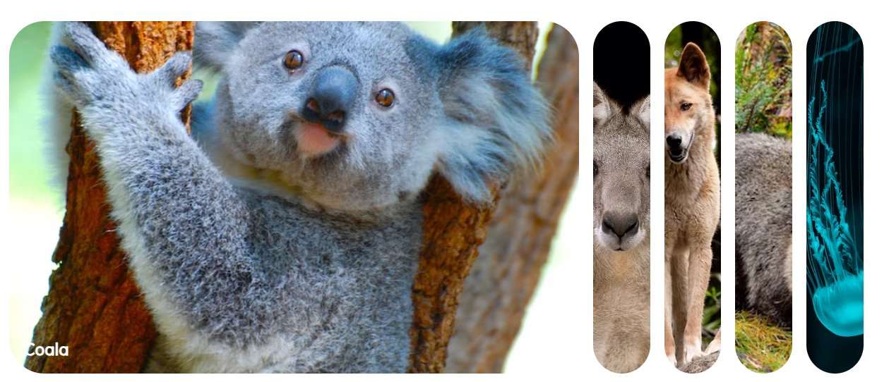
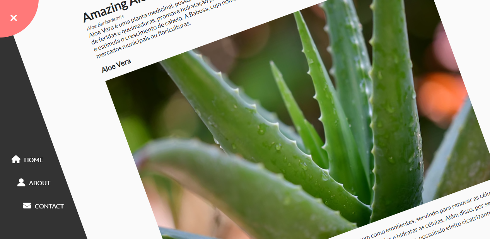
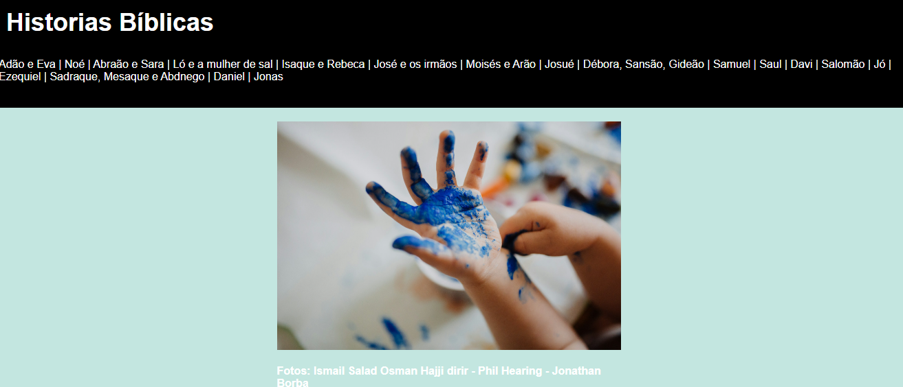

Apresentação Pessoal
Meu nome é Isabela e sou uma estudante determinada de Análise e Desenvolvimento de Sistemas, dedicada a alcançar a independência financeira e a ampliar meu conhecimento na área da tecnologia. Tenho um forte compromisso com meus valores e objetivos, e encontro grande satisfação em ensinar e auxiliar os outros. Participei de um bootcamp de desenvolvimento web voltado para mulheres, onde adquiri habilidades práticas valiosas. Na faculdade, aprendi sobre a importância do trabalho em equipe e, durante o bootcamp, aprimorei minhas habilidades de comunicação e networking. Reconheço que a tecnologia é o cerne do futuro e estou ansiosa para explorar todas as oportunidades que essa área em constante evolução pode oferecer.
Projetos acadêmicos
Cifra de César
Primeiro projeto que criei no bootcamp, consiste na criptografia de letras, baseado na cifra de César.
Veja maisData Lovers - Ricky and Morty
Segundo projeto, nomeado como "Data Lovers", aprendemos a manipulação de dados. Esse segundo projeto, trabalhei com uma dupla.
Veja maisProjetos Pessoais
Expansão de Cards
Procurando aprimorar minhas habilidades em interfaces de páginas, criei esse primeiro projeto em que aprendi a expansão de cards.
Veja maisMenu Interativo
Segundo projeto, nomeado como "Data Lovers", aprendemos a manipulação de dados. Esse segundo projeto, trabalhei com uma dupla.
Veja maisHistorias Biblicas
Esse projeto desenvolvi para disponibilizar um PDF que estou aprimorando, para auxiliar com histórias bíblicas.
Veja maisTecnologias e Ferramentas
Links e Contatos
Meu LinkedInMeu GitHub